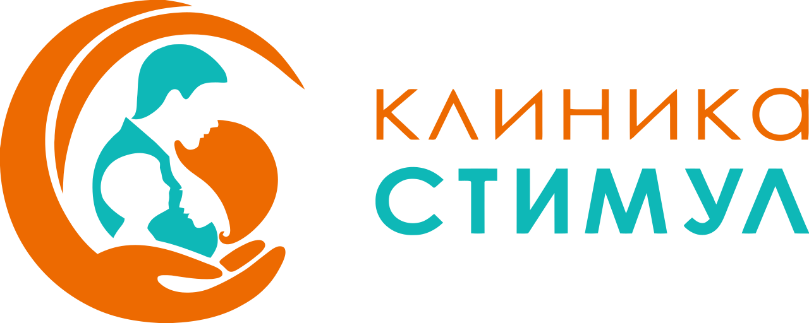

Поздравляем, вы на пути к новой улыбке
Соблюдайте следующие рекомендации
Контакты клиники
Клиника «Стимул»
г. Москва, ул. Ярцевская, 28
+7 (495) 009-26-09
Сразу после
Первые 2–3 часа
Держите тампон 20–30 минут
Аккуратно прикусите марлевый тампон для остановки кровотечения. Не трогайте область операции языком или пальцами.
Не ешьте и не пейте
Дождитесь, пока действие анестезии полностью пройдёт — обычно 2–3 часа.
Отдыхайте
Избегайте физических нагрузок. По возможности не наклоняйте голову вниз.
1-й день
Первые 24 часа
Не полощите рот и не сплёвывайте
Это может сорвать сгусток и вызвать кровотечение. Просто проглатывайте слюну.
Прикладывайте холод
Холодный компресс на щёку по 15 минут через каждые 15 минут — помогает уменьшить отёк.
Ешьте мягкую еду комнатной температуры
Йогурт, пюре, суп. Жуйте на противоположной стороне. Избегайте горячего, острого и твёрдого.
Не курите и не употребляйте алкоголь
Курение и алкоголь замедляют заживление и повышают риск осложнений.
Принимайте назначенные препараты
Обезболивающие и антибиотики — строго по схеме, которую назначил врач.
2–7 дней
Первая неделя
Продолжайте мягкую диету
Избегайте орехов, семечек, хлебных корок и других твёрдых продуктов.
Аккуратно чистите зубы
Обходите область импланта. Используйте мягкую щётку. Не трите швы.
Начните солевые полоскания
С 2-го дня — тёплая вода с чайной ложкой соли, 2–3 раза в день после еды. Без резких движений.
Спите на высокой подушке
Это помогает уменьшить отёк в первые ночи.
Не занимайтесь спортом
Исключите тренировки, подъём тяжестей и баню/сауну минимум на неделю.
7–14 дней
Вторая неделя
Посетите контрольный осмотр
Приходите на приём в назначенный день — врач оценит заживление.
Снимите швы (если не рассасывающиеся)
Обычно через 7–10 дней. Только у врача, самостоятельно не снимайте.
Постепенно возвращайтесь к обычному питанию
Добавляйте более плотную пищу, но пока избегайте жёсткого жевания на стороне импланта.
Долгосрочно
Уход и профилактика
Чистите зубы 2 раза в день
Используйте мягкую щётку и зубную нить или ирригатор, как рекомендует врач.
Посещайте стоматолога каждые 6 месяцев
Регулярные осмотры и профессиональная гигиена продлевают срок службы импланта.
Сообщайте врачу о любых изменениях
Боль, подвижность, покраснение или неприятный запах — повод немедленно обратиться в клинику.
⚠️ Когда срочно звонить врачу:
Сильное кровотечение, которое не останавливается, нарастающий отёк после 3-го дня, высокая температура (выше 38 °C), острая боль, не снимаемая обезболивающими.